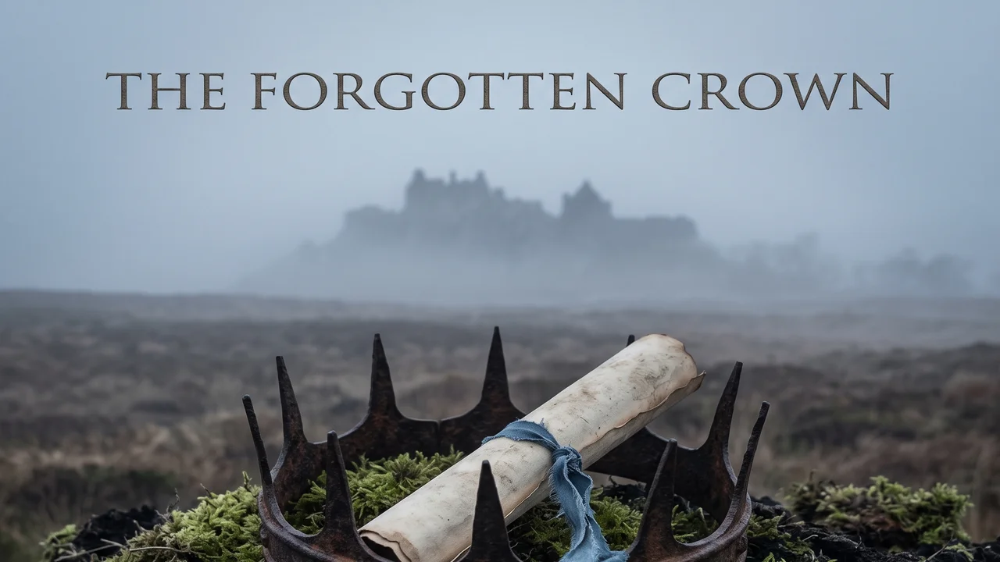

The Forgotten Crown
A 15-track cinematic exploration of historical subjugation, the orchestrated division of the working class, and the awakening of a populace to their unalienable sovereignty. Grounded in the 1689 Scottish Claim of Right and the ancient safeguard of Salvo Jure Cujuslibet (“saving the right of anyone”), the album demonstrates that popular sovereignty rests with the people, not parliaments or crowns.
Curated Visual Exhibits
Widescreen visual representations tracing the memory of the soil, the corporate enclosures of Freeports, the archivist's midnight discovery, and the unified sovereign assembly.

Interactive Streaming Jukebox & Lyrics Studio
Explore all 15 songs organized across 4 narrative acts. Access full literary poetry, narrative context, musical direction, and drop a note directly to the Bard.
1. Prologue: The Dust of Estates
The Citizen's Journey & Narrative Context
The earth does not forget the rights of its people. We are walking on the dust of estates, but the memory remains.
Literary Lyrics & Poetry
Epistemic Pull Quotes
Constitutional Matrix & Legal Ledger
A rigorous systemic examination comparing ancient Scottish constitutional safeguards with modern corporate feudalism and popular sovereignty.
| Constitutional Pillar | Historical & Legal Foundation | Contemporary Suppression | Popular Awakening & Remedy |
|---|
Historical Lore & Blueprint Essays
Preserved historical analyses and artistic guidelines informing the creation of The Forgotten Crown.
The Claim of Right (1689) & The Annexation (1707)
The 1707 Treaty of Union is conventionally framed as a voluntary partnership. However, it was preceded by the 1689 Claim of Right, which established that sovereignty rests inherently with the Scottish people. The Treaty operated as an involuntary annexation, enforcing Westminster's parliamentary sovereignty upon a nation whose constitutional law forbids parliamentary absolutism.
Under Scots law, the monarch and parliament are subjects of the people's authority. The working class is subject to policies determined by a distant parliament dominated by external interests, leaving local communities powerless to prevent asset stripping and resource expropriation.
Corporate Feudalism & Plunder of the Common Good
The Scottish legal doctrine of the "Common Good"—land and municipal wealth held collectively in perpetuity—is systematically dismantled by neoliberal policies, manifested aggressively in modern "Freeports" and Special Economic Zones (SEZs).
These zones create deregulated corporate fiefdoms on ancient common ground, stripping labor rights, environmental oversight, and local revenue. By entrenching poverty and manufacturing artificial competition for survival, the powerful ensure the working class is kept too exhausted to unite in defense of their heritage.
The Principle of Salvo Jure Cujuslibet
Translating to "saving the right of anyone," this historical parliamentary procedure was enacted at the close of Scottish legislative sessions to ensure that no individual's lawful rights could be extinguished by unnotified acts or statutory corruption.
This principle establishes an irrefutable legal foundation: Scottish constitutional tradition prioritizes the citizen's rights over state overreach. The people never surrendered their constitutional prerogatives, proving that Westminster's claimed absolute sovereignty is legally null under Scots law.
The Stirling Directive & United Nations C-24
Driven by domestic political deadlock, civic documents like the Stirling Directive assert direct citizen sovereignty, instructing elected officials rather than subserviently petitioning them. The Edinburgh Proclamation demands the recall of the Scottish Convention of Estates to restore popular governance.
With domestic British legal avenues exhausted by Supreme Court rulings upholding parliamentary supremacy, the campaign elevates the dispute to the United Nations Special Committee on Decolonization (C-24), reframing independence from an internal domestic disagreement into an international human rights imperative.
Musical Direction & Performance Guidelines
-
Genre & Style: Traditional and Contemporary Scottish Folk, Bothy Ballads, Celtic Folk-Rock. Driving 4/4 Strathspey rhythms and contemplative modal arrangements.
-
Instrumentation: DADGAD acoustic guitar, Scottish traditional cello (sul tasto and rhythmic bass), Scottish Low Whistle (intimate melodic phrasing), Border Pipes and Highland Pipes (climactic anthems).
-
Vocal Delivery: Raw, weathered, working-class baritone (inspired by Dick Gaughan). Authentic enunciation, moral urgency, and profound emotional gravity.
-
Narrative Trajectory: From melancholic observation of community decay, to urgent frustration with party politics, to archival discovery of legal defenses, ending in triumphant collective resolve.